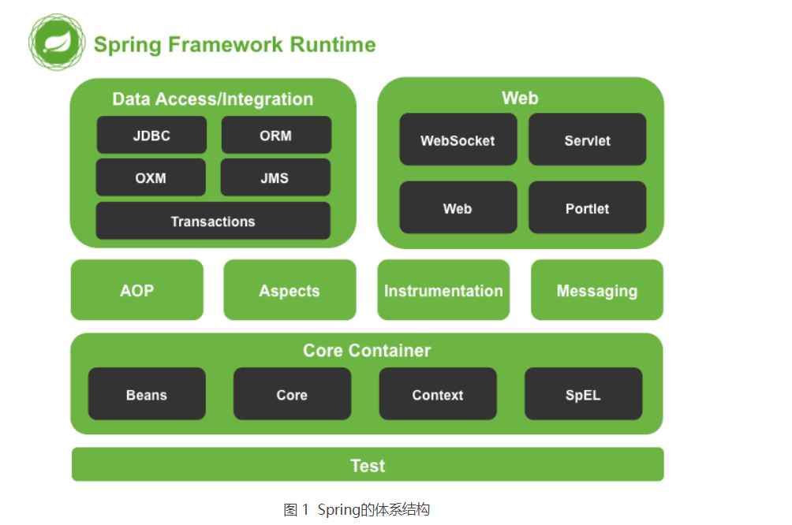
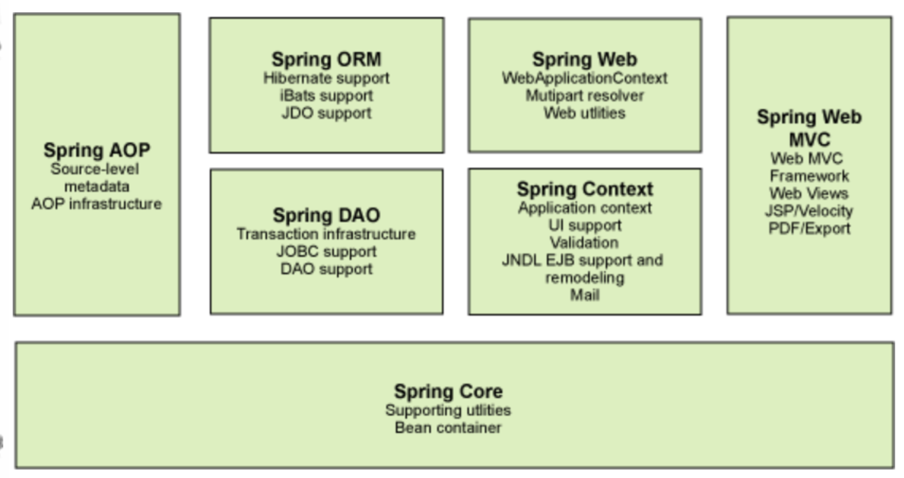
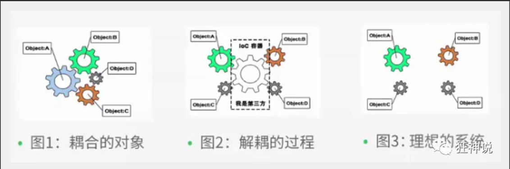
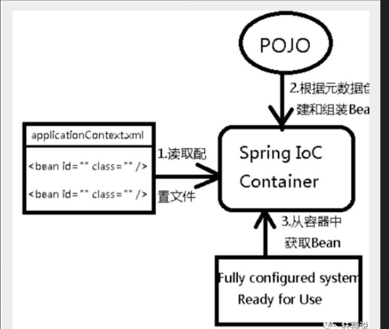
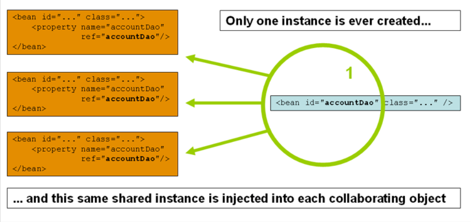
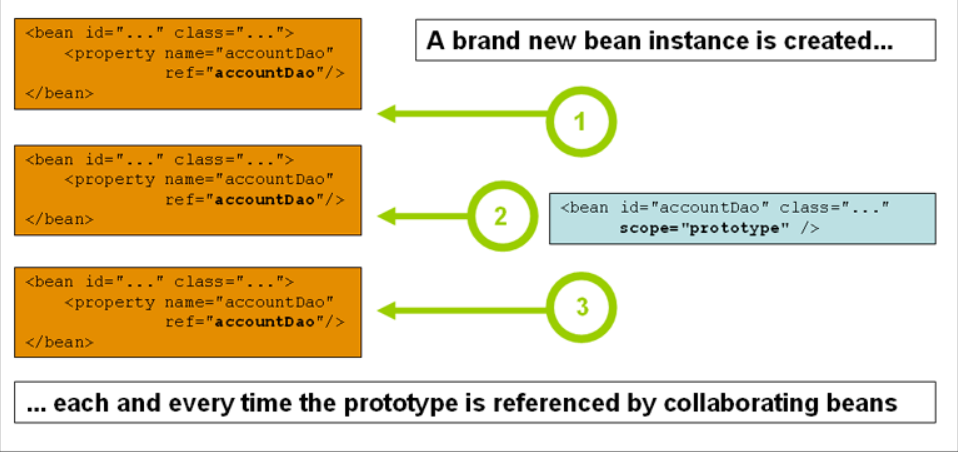
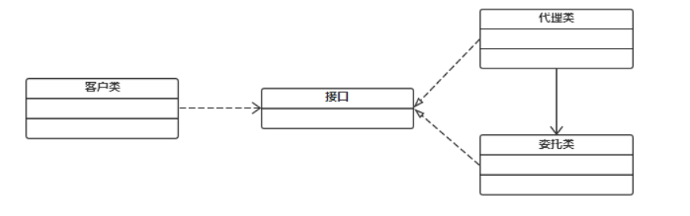
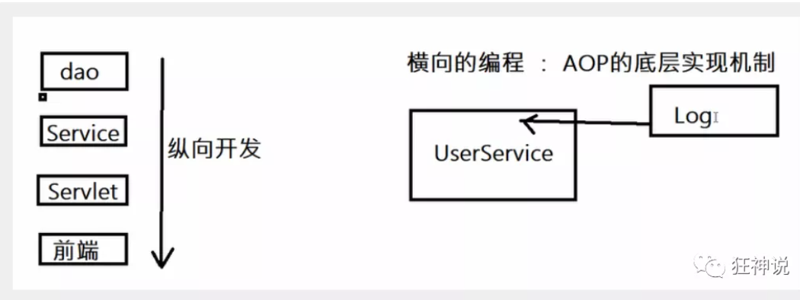
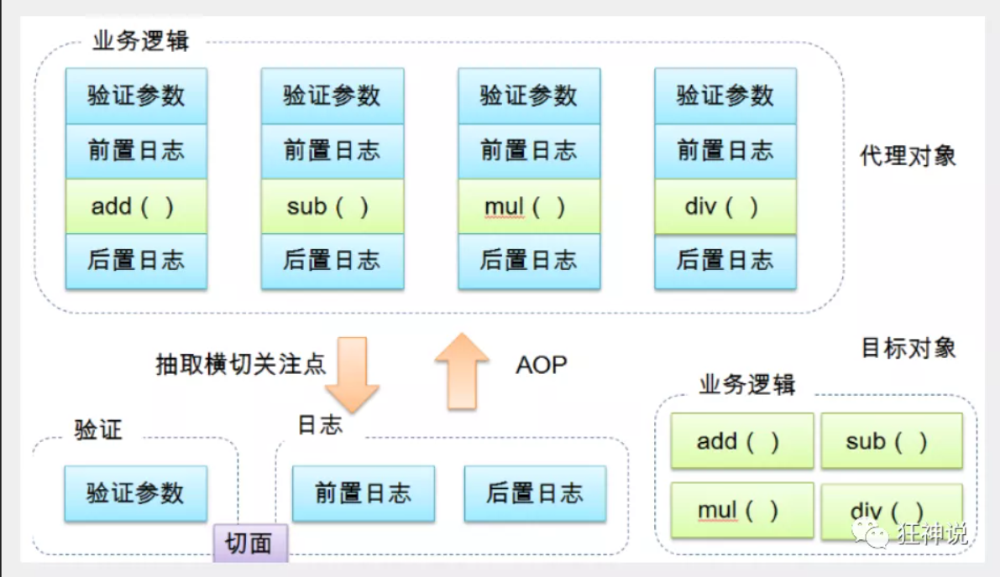
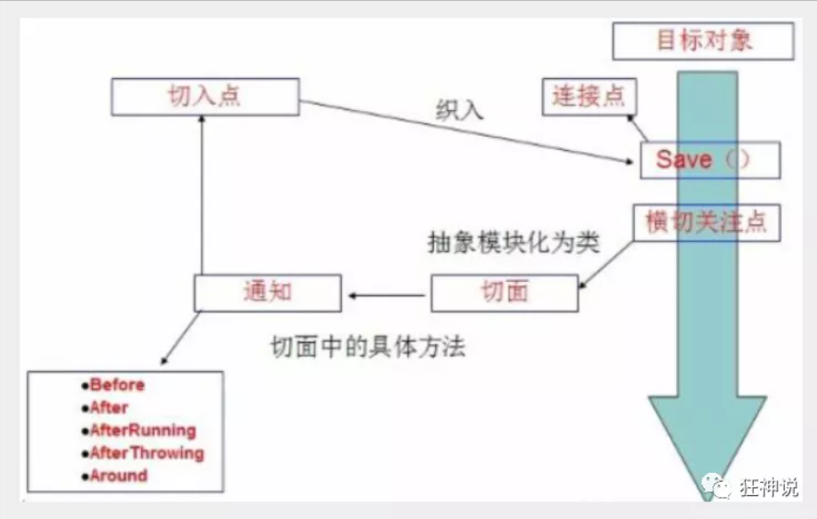

Spring
Spring Framework 中文文档
Spring是一个开源框架，它由[Rod Johnson](https://baike.baidu.com/item/Rod Johnson)创建。它是为了解决企业应用开发的复杂性而创建的。Spring使用基本的JavaBean来完成以前只可能由EJB完成的事情。然而，Spring的用途不仅限于服务器端的开发。从简单性、可测试性和松耦合的角度而言，任何Java应用都可以从Spring中受益。
Spring是一个轻量级的控制反转(IoC)和面向切面(AOP)的容器框架。
简介
2002年 ,首次推出了Spring框架的雏形 : interface21框架
Spring框架以interface为基础,经过重新设计,并不断丰富其内涵,于2004年3月24日发布了1.0正式版
spring理念: 使现有的技术更加容易使用,本身是一个大杂烩 , 整合了现有的技术框架
优点:
是一个开源免费框架(容器)!
是一个轻量级,非入侵式的框架
控制反转(IOC) ,面向切面编程(AOP) 支持事务处理,对框架整合支持!
组成: 
Spring 框架是一个分层架构，由 7 个定义良好的模块组成。Spring 模块构建在核心容器之上，核心容器定义了创建、配置和管理 bean 的方式 .

组成 Spring 框架的每个模块（或组件）都可以单独存在，或者与其他一个或多个模块联合实现。每个模块的功能如下：
核心容器 ：核心容器提供 Spring 框架的基本功能。核心容器的主要组件是 BeanFactory，它是工厂模式的实现。BeanFactory 使用控制反转 （IOC） 模式将应用程序的配置和依赖性规范与实际的应用程序代码分开。Spring 上下文 ：Spring 上下文是一个配置文件，向 Spring 框架提供上下文信息。Spring 上下文包括企业服务，例如 JNDI、EJB、电子邮件、国际化、校验和调度功能。Spring AOP ：通过配置管理特性，Spring AOP 模块直接将面向切面的编程功能 , 集成到了 Spring 框架中。所以，可以很容易地使 Spring 框架管理任何支持 AOP的对象。Spring AOP 模块为基于 Spring 的应用程序中的对象提供了事务管理服务。通过使用 Spring AOP，不用依赖组件，就可以将声明性事务管理集成到应用程序中。Spring DAO ：JDBC DAO 抽象层提供了有意义的异常层次结构，可用该结构来管理异常处理和不同数据库供应商抛出的错误消息。异常层次结构简化了错误处理，并且极大地降低了需要编写的异常代码数量（例如打开和关闭连接）。Spring DAO 的面向 JDBC 的异常遵从通用的 DAO 异常层次结构。Spring ORM ：Spring 框架插入了若干个 ORM 框架，从而提供了 ORM 的对象关系工具，其中包括 JDO、Hibernate 和 iBatis SQL Map。所有这些都遵从 Spring 的通用事务和 DAO 异常层次结构。Spring Web 模块 ：Web 上下文模块建立在应用程序上下文模块之上，为基于 Web 的应用程序提供了上下文。所以，Spring 框架支持与 Jakarta Struts 的集成。Web 模块还简化了处理多部分请求以及将请求参数绑定到域对象的工作。Spring MVC 框架 ：MVC 框架是一个全功能的构建 Web 应用程序的 MVC 实现。通过策略接口，MVC 框架变成为高度可配置的，MVC 容纳了大量视图技术，其中包括 JSP、Velocity、Tiles、iText 和 POI。
拓展:
Spring Boot
一个快速开发的脚手架
基于SpringBoot快速的开发单个微服务
约定大于配置
Spring Cloud
SpringCloud 基于SpringBoot实现
SpringBoot的出现就是为了解决Spring的弊端:
即违背了原理的理念, 配置十分繁琐 , 人称 “ 配置地狱 ” !
IOC理论 控制反转是一种通过描述（XML或注解）并通过第三方去生产或获取特定对象的方式。在Spring中实现控制反转的是IoC容器，其实现方法是依赖注入（Dependency Injection,DI）。
控制反转(inversion of control), 是一种设计思想,DI(dependency injection依赖注入)是IOC的一种方法.未使用IOC的程序中,我们使用面向对象编程,对象的创建和对象之间的依赖关系完全硬编码在程序中,对象的创建是由程序自己控制的.控制反转就是将对象的创建转移给了第三方.IOC就我认为是:获得依赖对象的方式反转了
【硬编码：是将数据直接其纳入到程序或其他可执行程序或其他可执行对象的源代码中的软件开发时间，与外部获取数据或在运行时生成数据不同。硬编码数据通常只能通过编辑源代码或重新编译可执行文件来修改。】

IOC是Spring框架的核心内容, 使用了多种方式完美的实现了IOC,xml配置与注解形式,新版本的spring也可以零配置实现IOC
Spring容器在初始化的时候先读取配置文件,根据配置文件或者元数据创建与组织对象存入容器中,程序使用时在从IOC容器中取出需要的对象

采用XML方式配置Bean的时候，Bean的定义信息是和实现分离的，而采用注解的方式可以把两者合为一体，Bean的定义信息直接以注解的形式定义在实现类中，从而达到了零配置的目的。
我们先用我们原来的方式写一段代码 .
1、先写一个UserDao接口
1 2 3 public interface UserDao { public void getUser () ; }
2、再去写Dao的实现类
1 2 3 4 5 6 public class UserDaoImpl implements UserDao { @Override public void getUser () { System.out.println("获取用户数据" ); } }
3、然后去写UserService的接口
1 2 3 public interface UserService { public void getUser () ; }
4、最后写Service的实现类
1 2 3 4 5 6 7 8 public class UserServiceImpl implements UserService { private UserDao userDao = new UserDaoImpl (); @Override public void getUser () { userDao.getUser(); } }
5、测试一下
1 2 3 4 5 @Test public void test () { UserService service = new UserServiceImpl (); service.getUser(); }
这是我们原来的方式 , 开始大家也都是这么去写的对吧 . 那我们现在修改一下 .
把Userdao的实现类增加一个 .
1 2 3 4 5 6 public class UserDaoMySqlImpl implements UserDao { @Override public void getUser () { System.out.println("MySql获取用户数据" ); } }
紧接着我们要去使用MySql的话 , 我们就需要去service实现类里面修改对应的实现
1 2 3 4 5 6 7 8 public class UserServiceImpl implements UserService { private UserDao userDao = new UserDaoMySqlImpl (); @Override public void getUser () { userDao.getUser(); } }
在假设, 我们再增加一个Userdao的实现类 .
1 2 3 4 5 6 public class UserDaoOracleImpl implements UserDao { @Override public void getUser () { System.out.println("Oracle获取用户数据" ); } }
那么我们要使用Oracle , 又需要去service实现类里面修改对应的实现 . 假设我们的这种需求非常大 , 这种方式就根本不适用了, 甚至反人类对吧 , 每次变动 , 都需要修改大量代码 . 这种设计的耦合性太高了, 牵一发而动全身 .
那我们如何去解决呢 ?
我们可以在需要用到他的地方 , 不去实现它 , 而是留出一个接口 , 利用set , 我们去代码里修改下 .
1 2 3 4 5 6 7 8 9 10 11 12 public class UserServiceImpl implements UserService { private UserDao userDao; public void setUserDao (UserDao userDao) { this .userDao = userDao; } @Override public void getUser () { userDao.getUser(); } }
现在去我们的测试类里 , 进行测试 ;
1 2 3 4 5 6 7 8 9 @Test public void test () { UserServiceImpl service = new UserServiceImpl (); service.setUserDao( new UserDaoMySqlImpl () ); service.getUser(); service.setUserDao( new UserDaoOracleImpl () ); service.getUser(); }
大家发现了区别没有 ? 可能很多人说没啥区别 . 但是同学们 , 他们已经发生了根本性的变化 , 很多地方都不一样了 . 仔细去思考一下 , 以前所有东西都是由程序去进行控制创建 , 而现在是由我们自行控制创建对象 , 把主动权交给了调用者 . 程序不用去管怎么创建,怎么实现了 . 它只负责提供一个接口 .
这种思想 , 从本质上解决了问题 , 我们程序员不再去管理对象的创建了 , 更多的去关注业务的实现 . 耦合性大大降低 . 这也就是IOC的原型 !
入门案例(hello Spring)
1.导包
只需要导入这一个(springframework)即可包含所有Spring所需要的jar包
注 : spring 需要导入commons-logging进行日志记录 . 我们利用maven , 他会自动下载对应的依赖项 .只需要导入
1 2 3 4 5 6 <dependency > <groupId > org.springframework</groupId > <artifactId > spring-webmvc</artifactId > <version > 5.3.16</version > </dependency >
2.编写实体类
1 2 3 4 5 6 7 8 9 10 11 12 13 14 15 16 17 18 19 20 21 22 23 24 25 26 27 28 29 30 31 32 33 34 35 36 37 38 39 40 41 42 43 44 45 46 47 48 49 package pojo;public class User { private int uid; private String name; private String pwd; public User () { } public User (int uid, String name, String pwd) { this .uid = uid; this .name = name; this .pwd = pwd; } @Override public String toString () { return "User{" + "uid=" + uid + ", name='" + name + '\'' + ", pwd='" + pwd + '\'' + '}' ; } public int getUid () { return uid; } public void setUid (int uid) { this .uid = uid; } public String getName () { return name; } public void setName (String name) { this .name = name; } public String getPwd () { return pwd; } public void setPwd (String pwd) { this .pwd = pwd; } }
编写配置文件
将此文件放入类加载目录下
1 2 3 4 5 6 7 8 9 10 11 12 13 14 15 16 17 <?xml version="1.0" encoding="UTF-8" ?> <beans xmlns ="http://www.springframework.org/schema/beans" xmlns:xsi ="http://www.w3.org/2001/XMLSchema-instance" xsi:schemaLocation ="http://www.springframework.org/schema/beans http://www.springframework.org/schema/beans/spring-beans.xsd" > <bean id ="user" class ="pojo.User" > <property name ="name" value ="Spring" /> </bean > </beans >
测试代码
1 2 3 4 5 6 7 8 @Test public void test02 () { ApplicationContext context = new ClassPathXmlApplicationContext ("beans.xml" ); User user = (User) context.getBean("user" ); System.out.println(user); }
思考?
User对象是谁创建的 ? hello 对象是由Spring创建的
User对象的属性是怎么设置的 ? hello 对象的属性是由Spring容器设置的
这个过程就叫控制反转 :
控制 : 谁来控制对象的创建 , 传统应用程序的对象是由程序本身控制创建的 , 使用Spring后 , 对象是由Spring来创建的
反转 : 程序本身不创建对象 , 而变成被动的接收对象 .
依赖注入 : 就是利用set方法来进行注入的.
IOC是一种编程思想，由主动的编程变成被动的接收
可以通过newClassPathXmlApplicationContext去浏览一下底层源码 .
简单模拟应用场景 我们原先的习惯是这样的:
1 2 3 4 5 6 7 8 9 10 11 12 13 14 15 16 17 18 19 20 21 22 23 24 25 26 27 28 29 30 31 32 33 34 35 36 37 38 39 40 41 42 43 44 public interface UserDao { public void getUser () ; } public class UserDaoImpl implements UserDao { @Override public void getUser () { System.out.println("获取用户数据" ); } } public class UserDaoMySqlImpl implements UserDao { @Override public void getUser () { System.out.println("MySql获取用户数据" ); } } public interface UserService { public void getUser () ; } public class UserServiceImpl implements UserService { private UserDao userDao; public void setUserDao (UserDao userDao) { this .userDao = userDao; } @Override public void getUser () { userDao.getUser(); } } @Test public void test () { UserServiceImpl service = new UserServiceImpl (); service.setUserDao( new UserDaoMySqlImpl () ); service.getUser(); service.setUserDao( new UserDaoOracleImpl () ); service.getUser(); }
现在我们用Spring来实现一下(假设上述的持久层接口和实现已经写好) :
配置文件(beans.xml)
1 2 3 4 5 6 7 8 9 10 11 12 13 14 15 16 17 18 19 <?xml version="1.0" encoding="UTF-8" ?> <beans xmlns ="http://www.springframework.org/schema/beans" xmlns:xsi ="http://www.w3.org/2001/XMLSchema-instance" xsi:schemaLocation ="http://www.springframework.org/schema/beans http://www.springframework.org/schema/beans/spring-beans.xsd" > <bean id ="UserDaoImpl" class ="dao.UserDaoImpl" > </bean > <bean id ="UserDaoImplMysql" class ="dao.UserDaoImplMysql" > </bean > <bean id ="UserServiceImpl" class ="service.UserServiceImpl" > <property name ="userDao" ref ="UserDaoImplMysql" /> </bean > </beans >
测试代码:
1 2 3 4 5 6 7 @Test public void test03 () { ApplicationContext context = new ClassPathXmlApplicationContext ("beans.xml" ); UserServiceImpl service = (UserServiceImpl) context.getBean("UserServiceImpl" ); service.getUser(); }
IOC创建对象 创建对象的时机: 当我们将配置加载到应用程序上下文的时候就创建了
1 2 3 4 ApplicationContext context = new ClassPathXmlApplicationContext ("createUser.xml" );User user = (User) context.getBean("user" );
创建对象的方式: 默认使用无参构造进行创建, 但可以通过配置文件中的constructor-arg元素选择构造器进行创建
1 2 3 4 5 6 7 8 9 10 11 12 13 14 15 16 <?xml version="1.0" encoding="UTF-8" ?> <beans xmlns ="http://www.springframework.org/schema/beans" xmlns:xsi ="http://www.w3.org/2001/XMLSchema-instance" xsi:schemaLocation ="http://www.springframework.org/schema/beans http://www.springframework.org/schema/beans/spring-beans.xsd" > <bean id ="user" class ="pojo.User" > <constructor-arg type ="java.lang.String" value ="万叶" > </constructor-arg > </bean > </beans >
创建对象的复用性 Spring为了避免重复创建对象浪费内存, 每次加载配置文件只创建一个对象(对应配置文件中配置的每一个bean),故多次通过getBean()获取的同名Bean其实是同一个对象
1 2 3 4 5 6 7 @Test public void createUser () { ApplicationContext context = new ClassPathXmlApplicationContext ("createUser.xml" ); User user1 = (User) context.getBean("user" ); User user2 = (User) context.getBean("user" ); System.out.println(user1 == user2); }
Bean的配置 1 2 3 4 5 6 7 8 9 10 11 12 13 14 15 16 17 18 19 20 21 <alias name ="userT" alias ="userNew" /> <bean id ="hello" name ="hello2 h2,h3;h4" class ="com.kuang.pojo.Hello" > <property name ="name" value ="Spring" /> </bean > <import resource ="{path}/beans.xml" />
Bean作用域 通过bean标签的scope属性设置作用域
1 <bean id ="对象id" class ="包名.类名" scope ="需要设置的作用域名" />
Scope
Description
singleton （默认值）将单个 Bean 定义限定为每个 Spring IoC 容器的单个对象实例。
prototype 将单个 Bean 定义的作用域限定为任意数量的对象实例。
request 将单个 Bean 定义的作用域限定为单个 HTTP 请求的生命周期。也就是说，每个 HTTP 请求都有自己的 Bean 实例，该实例是在单个 Bean 定义后面创建的。仅在网络感知Spring的上下文中有效。ApplicationContext
session 将单个 Bean 定义作用域限定为 HTTP 的生命周期。仅在网络感知Spring的上下文中有效。Session``ApplicationContext
application 将单个 Bean 定义的作用域限定为 的生命周期。仅在网络感知Spring的上下文中有效。ServletContext``ApplicationContext
websocket 将单个 Bean 定义的作用域限定为 的生命周期。仅在网络感知Spring的上下文中有效。WebSocket``ApplicationContext
几种作用域中，request、session作用域仅在基于web的应用中使用（不必关心你所采用的是什么web应用框架），只能用在基于web的Spring ApplicationContext环境。
单例作用域 Singleton 
原型作用域 Prototype 
Request 当一个bean的作用域为Request，表示在一次HTTP请求中，一个bean定义对应一个实例；即每个HTTP请求都会有各自的bean实例，它们依据某个bean定义创建而成。该作用域仅在基于web的Spring ApplicationContext情形下有效。
Session 当一个bean的作用域为Session，表示在一个HTTP Session中，一个bean定义对应一个实例。该作用域仅在基于web的Spring ApplicationContext情形下有效。
依赖注入 通过构造器注入 1 2 3 4 5 6 7 8 9 10 11 12 13 14 15 16 <?xml version="1.0" encoding="UTF-8" ?> <beans xmlns ="http://www.springframework.org/schema/beans" xmlns:xsi ="http://www.w3.org/2001/XMLSchema-instance" xsi:schemaLocation ="http://www.springframework.org/schema/beans http://www.springframework.org/schema/beans/spring-beans.xsd" > <bean id ="user" class ="pojo.User" > <constructor-arg type ="java.lang.String" value ="万叶" > </constructor-arg > </bean > </beans >
setter方式注入 实体类(getter,setter,toString已写好)
1 2 3 4 5 6 7 8 9 10 11 public class User { private String uid; private User user; private String[] books; private List hobbies; private Map cards; private Set games; private Properties info; private String girl; }
常用类型注入对应如下:
1 2 3 4 5 6 7 8 9 10 11 12 13 14 15 16 17 18 19 20 21 22 23 24 25 26 27 28 29 30 31 32 33 34 35 36 37 38 39 40 41 42 43 44 45 46 47 48 49 50 51 52 53 54 55 56 57 58 59 60 61 62 63 <?xml version="1.0" encoding="UTF-8" ?> <beans xmlns ="http://www.springframework.org/schema/beans" xmlns:xsi ="http://www.w3.org/2001/XMLSchema-instance" xsi:schemaLocation ="http://www.springframework.org/schema/beans http://www.springframework.org/schema/beans/spring-beans.xsd" > <bean id ="user1" class ="pojo.User" > <property name ="uid" value ="001" > </property > </bean > <bean id ="user2" class ="pojo.User" > <property name ="user" ref ="user1" > </property > <property name ="books" > <array > <value > 双城记</value > <value > 往后余生</value > <value > 秽土转生</value > </array > </property > <property name ="hobbies" > <list > <value > 吉他</value > <value > 音乐</value > <value > 旅游</value > </list > </property > <property name ="cards" > <map > <entry key ="邮政" value ="1001" /> <entry key ="信用社" value ="2001" /> <entry key ="建行" value ="3001" /> </map > </property > <property name ="games" > <set > <value > 原神</value > <value > LOL</value > <value > 王者荣耀</value > </set > </property > <property name ="info" > <props > <prop key ="driver" > com.mysql.cj.jdbc.Driver</prop > <prop key ="url" > jdbc:mysql://localhost:3306/db01?& useSSL=true</prop > <prop key ="user" > root</prop > <prop key ="password" > 123456</prop > </props > </property > <property name ="girl" > <null > </null > </property > </bean > </beans >
命名空间方式注入 注意:使用命令空间注入时要在xml添加关于命令空间的配置
1 2 3 4 <!-- p命名空间xml-dta约束 --> xmlns:p="http://www.springframework.org/schema/p" <!-- c命名空间xml-dta约束 --> xmlns:c="http://www.springframework.org/schema/c"
p(Properties)命名空间注入 也就是相当于属性的快捷注入方式
注意: 使用的时候保证bean有无参构造并且需要注入的属性要有setter方法
1 2 <bean id ="user1" class ="pojo.User" p:uid ="1001" > </bean >
c(Constructor-args)命名空间注入 也就是相当于constructor-argsz的快捷注入方式
注意:要保证bean有 有参构造
1 2 <bean id ="user2" class ="pojo.User" c:uid ="1002" > </bean >
Bean自动装配 自动装配是使用spring满足bean依赖的一种方法 , spring会在应用上下文中为某个bean寻找其依赖的bean。
在Spring中有三种装配的方式:
在xml中显式配置
在java中显示配置(使用注解)
隐式的bean发现机制和自动装配。
Spring的自动装配需要从两个角度来实现，或者说是两个操作：
组件扫描(component scanning)：spring会自动发现应用上下文中所创建的bean；
自动装配(autowiring)：spring自动满足bean之间的依赖，也就是我们说的IoC/DI；
组件扫描和自动装配组合发挥巨大威力，使得显示的配置降低到最少。
下面将使用如下bean来进行测试:
bean:
1 2 3 4 5 6 7 8 9 10 11 12 13 14 15 16 17 18 19 20 21 22 23 24 25 26 27 28 29 30 31 32 33 34 35 36 37 38 39 40 41 42 43 44 45 46 47 48 49 50 51 52 53 54 55 package pojo;public class People { private Cat cat; private Dog dog; private String name; public void show () { this .cat.show(); this .dog.show(); } public People () { } public People (Cat cat, Dog dog, String name) { this .cat = cat; this .dog = dog; this .name = name; } @Override public String toString () { return "People{" + "cat=" + cat + ", dog=" + dog + ", name='" + name + '\'' + '}' ; } public Cat getCat () { return cat; } public void setCat (Cat cat) { this .cat = cat; } public Dog getDog () { return dog; } public void setDog (Dog dog) { this .dog = dog; } public String getName () { return name; } public void setName (String name) { this .name = name; } }
测试程序:
1 2 3 4 5 6 @org .junit.Testpublic void test01 () { ApplicationContext context = new ClassPathXmlApplicationContext ("beans.xml" ); People people = (People) context.getBean("people" ); people.show(); }
autowire byName 当一个bean节点带有 autowire byName的属性时。
将查找其类中所有的set方法名，例如setCat，获得将set去掉并且首字母小写的字符串，即cat。
去spring容器中寻找是否有此字符串名称id的对象。
如果有，就取出注入；如果没有，就报空指针异常。
1 2 3 4 5 6 7 8 9 10 11 12 13 14 15 16 17 18 19 20 21 <?xml version="1.0" encoding="UTF-8" ?> <beans xmlns ="http://www.springframework.org/schema/beans" xmlns:xsi ="http://www.w3.org/2001/XMLSchema-instance" xsi:schemaLocation ="http://www.springframework.org/schema/beans http://www.springframework.org/schema/beans/spring-beans.xsd" > <bean id ="cat" class ="pojo.Cat" > </bean > <bean id ="dog" class ="pojo.Dog" > </bean > <bean id ="people" class ="pojo.People" autowire ="byName" > <property name ="name" value ="南城" > </property > </bean >
autowire byType 使用autowire byType首先需要保证：同一类型的对象，在spring容器中唯一。如果不唯一，会报不唯一的异常。
1 2 3 4 5 6 7 8 9 10 11 12 13 14 15 16 17 18 19 20 <?xml version="1.0" encoding="UTF-8" ?> <beans xmlns ="http://www.springframework.org/schema/beans" xmlns:xsi ="http://www.w3.org/2001/XMLSchema-instance" xsi:schemaLocation ="http://www.springframework.org/schema/beans http://www.springframework.org/schema/beans/spring-beans.xsd" > <bean id ="dog" class ="pojo.Dog" > </bean > <bean id ="cat1" class ="pojo.Cat" > </bean > <bean id ="people" class ="pojo.People" autowire ="byType" > <property name ="name" value ="南城" > </property > </bean > </beans >
注解实现自动装配 jdk1.5支持注解,Spring2.5支持注解开发
在Spring4.0以后,使用注解需要导入aop的包(直接导入webmvc即可包含)
使用注解需要在xml配置文件引入配置约束 ,并且添加<context:annotation-config/>
1 2 3 4 5 6 7 8 9 10 11 <?xml version="1.0" encoding="UTF-8" ?> <beans xmlns ="http://www.springframework.org/schema/beans" xmlns:xsi ="http://www.w3.org/2001/XMLSchema-instance" xmlns:context ="http://www.springframework.org/schema/context" xsi:schemaLocation ="http://www.springframework.org/schema/beans http://www.springframework.org/schema/beans/spring-beans.xsd http://www.springframework.org/schema/context http://www.springframework.org/schema/context/spring-context.xsd" > <context:annotation-config /> </beans >
==使用注解自动装配的属性前提该属性是需要在IOC容器中存在(即使在配置文件xml中注册了该bean)==
@Autowired 由于注解是通过反射实现的,故不依赖属性的stter方法了
装配顺序原则:
先byType 然后byName
扩展:
@Autowired(required=false) 说明：false，对象可以为null；true，对象必须存对象，不能为null。
@Nullable 使用属性可以为null
@Qualifier 可以通过@Qualifier限定装配指定名字的bean
@Autowired是默认优先根据类型自动装配的，加上@Qualifier则可以优先根据byName的方式自动装配
@Qualifier不能单独使用。
1 2 @Qualifier(value = "cat2")
测试:
1 2 3 4 5 6 7 8 9 10 11 12 13 14 15 16 17 18 19 20 21 <?xml version="1.0" encoding="UTF-8" ?> <beans xmlns ="http://www.springframework.org/schema/beans" xmlns:xsi ="http://www.w3.org/2001/XMLSchema-instance" xmlns:context ="http://www.springframework.org/schema/context" xsi:schemaLocation ="http://www.springframework.org/schema/beans http://www.springframework.org/schema/beans/spring-beans.xsd http://www.springframework.org/schema/context http://www.springframework.org/schema/context/spring-context.xsd" > <context:annotation-config /> <bean id ="cat2" class ="pojo.Cat" > <property name ="name" value ="猫猫2" /> </bean > <bean id ="cat" class ="pojo.Cat" /> <bean id ="dog" class ="pojo.Dog" /> <bean id ="people" class ="pojo.People_annotation" > </bean > </beans >
1 2 3 4 5 6 7 8 9 10 11 12 13 14 15 16 17 18 19 20 21 22 23 24 25 26 27 28 29 30 31 32 33 34 35 36 37 38 39 40 41 42 43 package pojo;import org.springframework.beans.factory.annotation.Autowired;import org.springframework.beans.factory.annotation.Qualifier;public class People_annotation { @Autowired @Qualifier(value = "cat2") private Cat cat; @Autowired private Dog dog; private String name; public void show () { this .cat.show(); this .dog.show(); } public People_annotation () { } @Override public String toString () { return "People_annotation{" + "cat=" + cat.toString() + ", dog=" + dog.toString() + ", name='" + name + '\'' + '}' ; } } @org .junit.Test public void test02 () { ApplicationContext context = new ClassPathXmlApplicationContext ("beans_annotation.xml" ); People_annotation people = context.getBean("people" , People_annotation.class); people.show(); System.out.println(people.toString()); } 喵~ 汪~ People_annotation{cat=Cat{name='猫猫2' }, dog=pojo.Dog@7920ba90, name='null' } 喵~ 汪~ People_annotation{cat=Cat{name='null' }, dog=pojo.Dog@7920ba90, name='null' }
@Resource 这个注解是属于J2EE的(推荐使用,便于解耦),上面两个属于Spring
@Resource注解既可以用在setter中也可以用在属性当中，当Resource指定属性name名字时，就只会按照指定的name去查找bean，否则会报错。
当注解写在字段上时，@Resource不指定name，默认取字段名进行按照名称查找，如果注解写在setter方法上默认取属性名进行装配。如果最后都找不到与名称匹配的bean时才按照类型进行装配。 我们运行也会成功
总结: @Resource 先byName,再byType,可以通过属性name将bean id限定
配置文件
1 2 3 4 5 6 7 8 9 10 11 12 13 14 15 16 17 18 19 <?xml version="1.0" encoding="UTF-8" ?> <beans xmlns ="http://www.springframework.org/schema/beans" xmlns:xsi ="http://www.w3.org/2001/XMLSchema-instance" xmlns:context ="http://www.springframework.org/schema/context" xsi:schemaLocation ="http://www.springframework.org/schema/beans http://www.springframework.org/schema/beans/spring-beans.xsd http://www.springframework.org/schema/context http://www.springframework.org/schema/context/spring-context.xsd" > <context:annotation-config /> <bean id ="dog" class ="pojo.Dog" /> <bean id ="dog2" class ="pojo.Dog" > <property name ="name" value ="修勾勾2" > </property > </bean > <bean id ="people" class ="pojo.People_annotation" > </bean > </beans >
1 2 3 4 5 6 7 8 9 10 11 12 13 14 15 @Resource(name = "dog2") private Dog dog; 喵~ 汪~ People_annotation{cat=Cat{name='猫猫2' }, dog=Dog{name='修勾勾2' }, name='null' } @Resource private Dog dog; 喵~ 汪~ People_annotation{cat=Cat{name='猫猫2' }, dog=Dog{name='null' }, name='null' }
使用注解开发 需要的配置 注意! 使用注解需要在配置文件中引入相关的注解配置,以及扫描指定的包
1 2 3 4 5 6 7 8 9 10 11 12 13 <?xml version="1.0" encoding="UTF-8" ?> <beans xmlns ="http://www.springframework.org/schema/beans" xmlns:xsi ="http://www.w3.org/2001/XMLSchema-instance" xmlns:context ="http://www.springframework.org/schema/context" xsi:schemaLocation ="http://www.springframework.org/schema/beans http://www.springframework.org/schema/beans/spring-beans.xsd http://www.springframework.org/schema/context http://www.springframework.org/schema/context/spring-context.xsd" ><context:component-scan base-package ="com.kuang.pojo" /> <context:annotation-config /> </beans >
基础注解
@Component : 使用了该注解的类将会称为Spring的组件(即被Spring管理)
@value : 注入属性值
1 2 3 4 5 6 7 8 9 10 11 12 13 14 15 16 17 18 19 @Component("user") public class User { @Value("南城") public String name; } @Component("user") public class User { public String name; @Value("秦疆") public void setName (String name) { this .name = name; } }
衍生注解 所谓衍生,就有点类似html5的语义化标签(如header标签和div标签), 名字不同,功能都一样
@Component三个衍生注解
为了更好的进行分层，Spring可以使用其它三个注解，功能一样，目前使用哪一个功能都一样。
@Controller：web层
@Service：service层
@Repository：dao层
自动装配注解
@Autowired
@Qualifier 与@Autowired搭配使用限定bean id
@Resource J2EE的原生注解
作用域@scope 注解的值:
singleton：默认的，Spring会采用单例模式创建这个对象。关闭工厂 ，所有的对象都会销毁。
prototype：多例模式。关闭工厂 ，所有的对象不会销毁。内部的垃圾回收机制会回收
session
request
1 2 3 4 5 6 @Controller("user") @Scope("prototype") public class User { @Value("南城") public String name; }
xml与注解: XML与注解比较
XML可以适用任何场景 ，结构清晰，维护方便
注解不是自己提供的类使用不了，开发简单方便
xml与注解整合开发 ：推荐最佳实践
xml管理Bean
注解完成属性注入
使用过程中， 可以不用扫描，扫描是为了类上的注解
1 <context:annotation-config />
作用：
进行注解驱动注册，从而使注解生效
用于激活那些已经在spring容器里注册过的bean上面的注解，也就是显示的向Spring注册
如果不扫描包，就需要手动配置bean
如果不加注解驱动，则注入的值为null！
JavaConfig配置 其实, 我们也可以完全不使用xml配置!
JavaConfig 原来是 Spring 的一个子项目，它通过 Java 类的方式提供 Bean 的定义信息，在 Spring4 的版本， JavaConfig 已正式成为 Spring4 的核心功能 。
@Configuration 使用@Configuration注解可以将一个类声明成配置类,相当于xml中的<beans>
@bean 使用@bean 注解可以将一个返回bean的方法的返回值作为被Spring管理的bean,方法名就是bean id 相当于xml中的<bean>,其底层是@Component实现的
@Import(类名.class) 使用@Import注解可以引入其他的配置类
@ComponentScan(basePackages = “包名或者包路径”) 使用@Component注解可以扫描指定的包的组件,也就是说被扫描的包中的类也可以使用@Component注册组件bean , 相当于:
1 2 3 <beans > <context:component-scan base-package ="com.acme" /> </beans >
看如下例子:
需要被管理的bean
1 2 3 4 5 6 7 8 9 10 11 12 13 14 15 16 17 18 19 20 21 22 23 24 25 26 27 28 29 30 31 32 33 34 35 36 37 38 39 40 41 42 43 44 45 46 47 48 49 50 51 52 53 54 55 56 57 58 59 60 61 62 63 64 65 66 package pojo;import org.springframework.beans.factory.annotation.Value;public class User { private int uid; @Value("南城") private String name; private String pwd; public User () { System.out.println("User的无参构造函数!" ); } public User (String name) { this .name = name; System.out.println("一个参数的有参数构造" ); } public User (int uid, String name) { this .uid = uid; this .name = name; System.out.println("两个参数的有参数构造" ); } public User (int uid, String name, String pwd) { this .uid = uid; this .name = name; this .pwd = pwd; System.out.println("三个参数的有参数构造" ); } @Override public String toString () { return "User{" + "uid=" + uid + ", name='" + name + '\'' + ", pwd='" + pwd + '\'' + '}' ; } public int getUid () { return uid; } public void setUid (int uid) { this .uid = uid; } public String getName () { return name; } public void setName (String name) { this .name = name; } public String getPwd () { return pwd; } public void setPwd (String pwd) { this .pwd = pwd; } }
配置类AppConfig
1 2 3 4 5 6 7 8 9 10 11 12 13 14 15 16 17 package config;import org.springframework.context.annotation.Bean;import org.springframework.context.annotation.Configuration;import org.springframework.context.annotation.Import;import pojo.User;@Configuration public class AppConfig { @Bean User getUser () { return new User (); } }
测试:
1 2 3 4 5 6 7 8 9 @Test public void test01 () { ApplicationContext context = new AnnotationConfigApplicationContext (AppConfig.class); User user = (User) context.getBean("getUser" ); System.out.println(user.toString()); }
上述例子相当于:
1 2 3 4 5 <beans > <bean id ="getUser" class ="pojo.User" > <property name ="name" value ="南城" /> </bean > </beans >
代理模式 为什么要学习代理模式，因为AOP的底层机制就是动态代理！【SpringAOP和SpringMVC】
代理模式：
学习aop之前 , 我们要先了解一下代理模式！

静态代理:
抽象角色 : 一般使用接口或者抽象类来实现
真实角色 : 被代理的角色
代理角色 : 代理真实角色 ; 代理真实角色后 , 一般会做一些附属的操作 .
客户 : 使用代理角色来进行一些操作 .
代码实现
Rent . java 即抽象角色
1 2 3 4 public interface Rent { public void rent () ; }
Host . java 即真实角色
1 2 3 4 5 6 public class Host implements Rent { public void rent () { System.out.println("房屋出租" ); } }
Proxy . java 即代理角色
1 2 3 4 5 6 7 8 9 10 11 12 13 14 15 16 17 18 19 20 21 22 23 24 public class Proxy implements Rent { private Rent rent; public Proxy () { } public Proxy (Rent rent) { this .rent = rent; } public void rent () { seeHouse(); host.rent(); fare(); } public void seeHouse () { System.out.println("带房客看房" ); } public void fare () { System.out.println("收中介费" ); } }
Client . java 即客户
1 2 3 4 5 6 7 8 9 10 11 12 public class Client { public static void main (String[] args) { Host host = new Host (); Proxy proxy = new Proxy (host); proxy.rent(); } }
分析：在这个过程中，你直接接触的就是中介，就如同现实生活中的样子，你看不到房东，但是你依旧租到了房东的房子通过代理，这就是所谓的代理模式，程序源自于生活，所以学编程的人，一般能够更加抽象的看待生活中发生的事情。
静态代理的好处:
可以使得我们的真实角色更加纯粹 . 不再去关注一些公共的事情 .
公共的业务由代理来完成 . 实现了业务的分工 ,
公共业务发生扩展时变得更加集中和方便 .
缺点 :类多了 , 多了代理类 , 工作量变大了 . 开发效率降低 .
1、创建一个抽象角色，比如咋们平时做的用户业务，抽象起来就是增删改查！
1 2 3 4 5 6 7 public interface UserService { void add () ; void delete () ; void update () ; void query () ; }
2、我们需要一个真实对象来完成这些增删改查操作
1 2 3 4 5 6 7 8 9 10 11 12 13 14 15 16 17 18 19 public class UserServiceImpl implements UserService { public void add () { System.out.println("增加了一个用户" ); } public void delete () { System.out.println("删除了一个用户" ); } public void update () { System.out.println("更新了一个用户" ); } public void query () { System.out.println("查询了一个用户" ); } }
3、需求来了，现在我们需要增加一个日志功能，怎么实现！
思路1 ：在实现类上增加代码 【麻烦！】
思路2：使用代理来做，能够不改变原来的业务情况下，实现此功能就是最好的了！
4、设置一个代理类来处理日志！代理角色
1 2 3 4 5 6 7 8 9 10 11 12 13 14 15 16 17 18 19 20 21 22 23 24 25 26 27 28 29 30 31 32 public class UserServiceProxy implements UserService { private UserServiceImpl userService; public void setUserService (UserServiceImpl userService) { this .userService = userService; } public void add () { log("add" ); userService.add(); } public void delete () { log("delete" ); userService.delete(); } public void update () { log("update" ); userService.update(); } public void query () { log("query" ); userService.query(); } public void log (String msg) { System.out.println("执行了" +msg+"方法" ); } }
测试
1 2 3 4 5 6 7 8 9 10 public class Client { public static void main (String[] args) { UserService service = new UserServiceImp (); UserServiceProxy serviceProxy = new UserServiceProxy (service); serviceProxy.query(); } }

动态代理:
动态代理的角色和静态代理的一样 .
动态代理的代理类是动态生成的 . 静态代理的代理类是我们提前写好的
动态代理分为两类 : 一类是基于接口动态代理 , 一类是基于类的动态代理
基于接口的动态代理—-JDK动态代理
基于类的动态代理–cglib
现在用的比较多的是 javasist 来生成动态代理 . 百度一下javasist
我们这里使用JDK的原生代码来实现，其余的道理都是一样的！、
JDK的动态代理需要了解两个类
核心 : InvocationHandler 和 Proxy
利用Java的反射技术(Java Reflection)，在运行时创建一个实现某些给定接口的新类（也称“动态代理类”）及其实例（对象）,代理的是接口(Interfaces)，不是类(Class)，也不是抽象类。在运行时才知道具体的实现，spring aop就是此原理。
Proxy
Proxy提供了创建动态代理类和实例的静态方法 ，它也是由这些方法创建的所有动态代理类的父类 。 **创建代理对象实例方法:**public static Object newProxyInstance(ClassLoader loader,Class<?>[] interfaces,InvocationHandler h);
newProxyInstance( ) 方法有三个参数：
loader: 用哪个类加载器去加载代理对象
interfaces:动态代理类需要实现的接口,并且通过这个接口找到具体的需要代理的实现类
h:调用程序处理对象, 代理实例在执行方法时，会调用h里面的invoke方法去执行
InvocationHandler (调用程序处理接口)
InvocationHandler是由代理实例的调用处理程序实现的接口 。每个代理实例都有一个关联的调用处理程序 。 当在代理实例调用方法时，方法调用将被编码并分派到其调用处理程序的invoke方法。 invoke(Object proxy, Method method, Object[] args)有三个参数:
proxy: 代理实例
method: 代理实例执行方法时反射回来的方法
args: 代理实例执行方法时反射回来的方法参数
如下例子用之前静态代理添加日志功能的例子继续演示:
UserService接口:
1 2 3 4 5 6 public interface UserService { void add () ; void delete () ; void update () ; void query () ; }
UserServiceImp业务实现:
1 2 3 4 5 6 7 8 9 10 11 12 13 14 15 16 17 18 public class UserServiceImp implements UserService { @Override public void add () { System.out.println("增加用户" ); } @Override public void delete () { System.out.println("删除用户" ); } @Override public void update () { System.out.println("修改用户" ); } @Override public void query () { System.out.println("查询用户" ); } }
封装好的创建代理实例工具类:
1 2 3 4 5 6 7 8 9 10 11 12 13 14 15 16 17 18 19 20 21 22 23 24 25 26 27 28 29 30 31 32 33 34 35 import java.lang.reflect.InvocationHandler;import java.lang.reflect.Method;import java.lang.reflect.Proxy;public class InvocationHandlerProxy implements InvocationHandler { private Object target; public InvocationHandlerProxy (Object target) { this .target = target; } public Object getProxyInstance () { return Proxy.newProxyInstance(this .getClass().getClassLoader(),target.getClass().getInterfaces(),this ); } @Override public Object invoke (Object proxy, Method method, Object[] args) throws Throwable { log(proxy,method.getName()); return method.invoke(target,args); } public void log (Object o ,String msg) { System.out.println("代理对象:" +o.getClass()+"执行了" +msg+"方法!" ); } public void setTarget (Object target) { this .target = target; } }
测试程序Client:
1 2 3 4 5 6 7 8 9 10 public class Client { public static void main (String[] args) { UserServiceImp serviceImp = new UserServiceImp (); InvocationHandlerProxy invocationHandlerProxy = new InvocationHandlerProxy (serviceImp); UserService proxy = (UserService) invocationHandlerProxy.getProxyInstance(); proxy.query(); proxy.add(); } }
Spring中的AOP 相关概念: AOP（Aspect Oriented Programming）意为：面向切面编程，通过预编译方式和运行期动态代理实现程序功能的统一维护的一种技术。 AOP是OOP的延续，是软件开发中的一个热点，也是Spring框架中的一个重要内容，是函数式编程的一种衍生范型。利用AOP可以对业务逻辑的各个部分进行隔离，从而使得业务逻辑各部分之间的耦合度降低，提高程序的可重用性，同时提高了开发的效率。
Spring的Aop就是将公共的业务 (日志 , 安全等) 和领域业务结合起来 , 当执行领域业务时 , 将会把公共业务加进来 . 实现公共业务的重复利用 . 领域业务更纯粹 , 程序猿专注领域业务 , 其本质还是动态代理 .

相关概念:
横切关注点：跨越应用程序多个模块的方法或功能。即是，与我们业务逻辑无关的，但是我们需要关注的部分，就是横切关注点。如日志 , 安全 , 缓存 , 事务等等 ….
切面（Aspect）：横切关注点 被模块化 的特殊对象。即，它是一个类。 通知（Advice） ：切面必须要完成的工作。即，它是类中的一个方法。 目标（Target）：被通知对象。即原型对象
代理（Proxy）：向目标对象应用通知之后创建的对象。即代理对象或代理者
切入点（PointCut） ：切面通知 执行的 “地点”的定义。 连接点（JointPoint） ：与切入点匹配的执行点。在使用环绕切入时必须通过链接点显式调用方法

SpringAOP中，通过Advice(通知)定义横切逻辑，Spring中支持5种类型的Advice:
Advice类型
链接点
实现接口
前置通知:BeforeAdvice 切点(方法)执行前 org.springframework.aop.MethodBeforeAdvice
后置通知:AfterAdvice
切点(方法)执行后 org.springframework.aop.MethodAfterAdvice
环绕通知:AroundAdvice,Interceptor 切点(方法)执行前后 org.aopalliance.intercept.MethodInterceptor
异常通知:ThrowsAdvice 切点(方法)抛出异常时 org.springframework.aop.ThrowsAdvice
引介通知:IntroductionInterceptor
在类中新增方法
org.springframework.aop.IntroductionInterceptor;
需要的配置: 使用api需要另外导入依赖包(不是webmvc里的包)
1 2 3 4 5 6 <dependency > <groupId > org.aspectj</groupId > <artifactId > aspectjweaver</artifactId > <version > 1.9.4</version > </dependency >
所需要的xml配置约束:
1 2 3 4 5 6 7 8 9 10 <?xml version="1.0" encoding="UTF-8" ?> <beans xmlns ="http://www.springframework.org/schema/beans" xmlns:xsi ="http://www.w3.org/2001/XMLSchema-instance" xmlns:aop ="http://www.springframework.org/schema/aop" xsi:schemaLocation =" http://www.springframework.org/schema/beans http://www.springframework.org/schema/beans/spring-beans.xsd http://www.springframework.org/schema/aop http://www.springframework.org/schema/aop/spring-aop.xsd" ></beans >
使用Spring API实现AOP 我们需要将切入的代码实现相关的通知接口(如:MethodBeforeAdvice,AfterReturningAdvice等等…),随后使用<aop:config>中的<aop:pointcut>标签配置切入点, ,使用 <aop:advisor>配置通知类实现
UserService接口:
1 2 3 4 5 6 7 8 package aop;public interface UserService { void add () ; void delete () ; void update () ; void query () ; }
业务代码接口实现:
1 2 3 4 5 6 7 8 9 10 11 12 13 14 15 16 17 18 19 20 21 22 23 24 package aop;public class UserServiceImp implements UserService { @Override public void add () { System.out.println("增加用户" ); } @Override public void delete () { System.out.println("删除用户" ); } @Override public void update () { System.out.println("修改用户" ); } @Override public void query () { System.out.println("查询用户" ); } }
需要切入的代码:
前置通知需要实现org.springframework.aop.MethodBeforeAdvice接口
1 2 3 4 5 6 7 8 9 10 11 12 13 14 15 16 package aop.SpringAPI实现;import org.springframework.aop.MethodBeforeAdvice;import java.lang.reflect.Method;public class BeforeLog implements MethodBeforeAdvice { @Override public void before (Method method, Object[] args, Object target) throws Throwable { System.out.println(target.getClass().getName()+"执行方法" +method.getName()+"之前========" ); } }
后置通知需要实现org.springframework.aop.AfterReturningAdvice接口
1 2 3 4 5 6 7 8 9 10 11 12 13 14 15 16 17 package aop.SpringAPI实现;import org.springframework.aop.AfterReturningAdvice;import java.lang.reflect.Method;public class AfterLog implements AfterReturningAdvice { @Override public void afterReturning (Object returnValue, Method method, Object[] args, Object target) throws Throwable { System.out.println(target.getClass().getName()+"执行方法" +method.getName()+"之后========返回值为" +returnValue); } }
applicationconfig.xml
1 2 3 4 5 6 7 8 9 10 11 12 13 14 15 16 17 18 19 20 21 22 23 24 25 26 <?xml version="1.0" encoding="UTF-8" ?> <beans xmlns ="http://www.springframework.org/schema/beans" xmlns:xsi ="http://www.w3.org/2001/XMLSchema-instance" xmlns:aop ="http://www.springframework.org/schema/aop" xsi:schemaLocation ="http://www.springframework.org/schema/beans http://www.springframework.org/schema/beans/spring-beans.xsd http://www.springframework.org/schema/aop http://www.springframework.org/schema/aop/spring-aop.xsd" > <bean id ="serviceImp" class ="aop.UserServiceImp" /> <bean id ="beforeLog" class ="aop.SpringAPI实现.BeforeLog" /> <bean id ="afterLog" class ="aop.SpringAPI实现.AfterLog" /> <aop:config > <aop:pointcut id ="pointcut" expression ="execution(* aop.UserServiceImp.*(..))" /> <aop:advisor advice-ref ="beforeLog" pointcut-ref ="pointcut" /> <aop:advisor advice-ref ="afterLog" pointcut-ref ="pointcut" /> </aop:config > </beans >
测试:
1 2 3 4 5 6 7 8 9 10 11 12 13 14 15 import aop.UserService;import org.springframework.context.ApplicationContext;import org.springframework.context.support.ClassPathXmlApplicationContext;import 动态代理.增加功能.UserServiceImp;public class MainDemo1 { public static void main (String[] args) { ApplicationContext context = new ClassPathXmlApplicationContext ("appconfig1.xml" ); UserService service = (UserService) context.getBean("serviceImp" ); service.query(); } }
注意与拓展: <aop:config>切点表达式:
关于Spring中AOP的切点表示更多详细参考:切点表达式用法 (cnblogs.com)
由于Spring切面粒度最小是达到方法级别，而execution表达式可以用于明确指定方法返回类型，类名，方法名和参数名等与方法相关的部件，并且在Spring中，大部分需要使用AOP的业务场景也只需要达到方法级别即可 ，因而execution表达式的使用是最为广泛的。如下是execution表达式的语法：
1 execution(方法访问修饰符? 返回值 方法含包名全路径?方法名(参数类型) 抛出的异常类型?)
这里问号表示当前项可以有也可以没有 ，其中各项的语义如下：
*通配符，该通配符主要用于匹配单个单词，或者是以某个词为前缀或后缀的单词。
..通配符，该通配符表示0个或多个项 ，主要用于方法的含包名全路径和参数类型中，如果用于含包名全路径中，==则表示匹配当前包及其子包==，如果用于参数类型中，则表示匹配0个或多个参数。
如下示例表示匹配返回值为任意类型，并且是com.spring.service包及其子包下的任意类的名称为businessService的方法，而且该方法不能有任何参数：
1 execution(* com.spring.service..*.businessService())
这里需要说明的是，包路径service...businessService()中的..应该理解为延续前面的service路径，表示到service路径为止，或者继续延续service路径，从而包括其子包路径；后面的 .businessService()，这里的*表示匹配一个单词，因为是在方法名前，因而表示匹配任意的类。
如下示例是使用..表示任意个数的参数的示例，需要注意，表示参数的时候可以在括号中事先指定某些类型的参数，而其余的参数则由..进行匹配：
1 execution(* com.spring.service.BusinessObject.businessService(java.lang.String,..))
实现类与接口的转换: 由于我们的实现类(即UserServiceImp)交给了Spring进行代理来实现AOP ,所以我们在获取bean时应该使用实现类对应的接口来获取
1 context.getBean("serviceImp" ,UserService.class).add();
使用自定义类实现AOP 我们除了可以通过实现相关的接口来进行通知增强外,还可以自定义切入通知类 ,只需要使用<aop:aspect ref="myAdvice" </aop:aspect>配置切面标签中配置切面即可
UserService接口与其实现类与上面的例子一致,就省略了
UserService接口,实现类 略
自定义通知类 MyAdvice:
1 2 3 4 5 6 7 8 9 10 11 12 package aop.自定义类实现;public class MyAdspect { public void before () { System.out.println("================执行方法前============" ); } public void after () { System.out.println("================执行方法后============" ); } }
applicationconfig.xml
1 2 3 4 5 6 7 8 9 10 11 12 13 14 15 16 17 18 19 20 21 22 23 24 <?xml version="1.0" encoding="UTF-8" ?> <beans xmlns ="http://www.springframework.org/schema/beans" xmlns:xsi ="http://www.w3.org/2001/XMLSchema-instance" xmlns:aop ="http://www.springframework.org/schema/aop" xsi:schemaLocation ="http://www.springframework.org/schema/beans http://www.springframework.org/schema/beans/spring-beans.xsd http://www.springframework.org/schema/aop http://www.springframework.org/schema/aop/spring-aop.xsd" > <bean id ="serviceImp" class ="aop.UserServiceImp" /> <bean id ="myAdvice" class ="aop.自定义类实现.MyAspect" /> <aop:config > <aop:pointcut id ="pointcut" expression ="execution(* aop.UserServiceImp.*(..))" /> <aop:aspect ref ="myAspect" id ="myAspect" > <aop:before method ="after" pointcut-ref ="pointcut" /> <aop:after method ="before" pointcut-ref ="pointcut" /> </aop:aspect > </aop:config > </beans >
测试:
1 2 3 4 5 6 7 8 9 10 11 12 13 14 15 package aop.自定义类实现;import aop.UserService;import aop.UserServiceImp;import org.springframework.context.ApplicationContext;import org.springframework.context.support.ClassPathXmlApplicationContext;public class MainDemo2 { public static void main (String[] args) { ApplicationContext context = new ClassPathXmlApplicationContext ("appconfig2.xml" ); UserService userService = (UserService) context.getBean("serviceImp" ); userService.add(); } }
补充:环绕切入 **环绕切入需要显式的通过链接点ProceedingJoinPoint**对象调用proceed()方法执行目标(原型对象)调用的方法
自定义切面类:
1 2 3 4 5 6 7 8 9 10 import org.aspectj.lang.ProceedingJoinPoint;public class MyAspect { public void round (ProceedingJoinPoint joinPoint) throws Throwable { System.out.println("================执行方法前============" ); Object returnValue = joinPoint.proceed(); System.out.println("执行了" +joinPoint.getSignature()+"方法" +"原型对象为" +joinPoint.getTarget()+"返回值:" +returnValue); } }
applicationconfig.xml
1 2 3 4 5 6 7 8 9 10 11 12 13 14 15 16 17 18 19 20 21 22 23 <?xml version="1.0" encoding="UTF-8" ?> <beans xmlns ="http://www.springframework.org/schema/beans" xmlns:xsi ="http://www.w3.org/2001/XMLSchema-instance" xmlns:aop ="http://www.springframework.org/schema/aop" xsi:schemaLocation ="http://www.springframework.org/schema/beans http://www.springframework.org/schema/beans/spring-beans.xsd http://www.springframework.org/schema/aop http://www.springframework.org/schema/aop/spring-aop.xsd" > <bean id ="serviceImp" class ="aop.UserServiceImp" /> <bean id ="myAdvice" class ="aop.自定义类实现.MyAspect" /> <aop:config > <aop:pointcut id ="pointcut" expression ="execution(* aop.UserServiceImp.*(..))" /> <aop:aspect ref ="myAdvice" id ="myAspect" > <aop:around method ="round" pointcut-ref ="pointcut" /> </aop:aspect > </aop:config > </beans >
使用注解实现AOP 实现aop的常用注解:
@Aspect 标注为自定义切面类@Before("execution(表达式)") 标注方法为前置通知方法@After("execution(表达式") 标注方法为前置通知方法@Around("execution(表达式") 标注方法为环绕通知方法(注意需要显示通过链接点调用方法)@EnableAspectJAutoProxy 用于自定义配置类, 开启自动代理
aop:aspectj-autoproxy：说明
通过aop命名空间的<aop:aspectj-autoproxy />声明自动为spring容器中那些配置@aspectJ切面的bean创建代理，织入切面。当然，spring 在内部依旧采用AnnotationAwareAspectJAutoProxyCreator进行自动代理的创建工作，但具体实现的细节已经被<aop:aspectj-autoproxy />隐藏起来了
<aop:aspectj-autoproxy />有一个proxy-target-class属性，默认为false，表示使用jdk动态代理织入增强，当配为<aop:aspectj-autoproxy poxy-target-class=”true”/>时，表示使用CGLib动态代理技术织入增强。不过即使proxy-target-class设置为false，如果目标类没有声明接口，则spring将自动使用CGLib动态代理。
自定义配置类不用配置文件 如下例子完全采用注解注册bean,并且实现环绕切面 (UserService接口和实现类已省略)
自定义切面类: AnnotationAspect
1 2 3 4 5 6 7 8 9 10 11 12 13 14 15 16 17 18 19 20 21 package aop.注解实现;import org.aspectj.lang.ProceedingJoinPoint;import org.aspectj.lang.annotation.After;import org.aspectj.lang.annotation.Around;import org.aspectj.lang.annotation.Aspect;import org.aspectj.lang.annotation.Before;import org.springframework.context.annotation.EnableAspectJAutoProxy;import org.springframework.stereotype.Component;@Aspect public class AnnotationAspect { @Around("execution(* aop.UserServiceImp.*(..))") public void around (ProceedingJoinPoint joinPoint) throws Throwable { System.out.println("================执行方法前============" ); Object returnValue = joinPoint.proceed(); System.out.println("执行了" +joinPoint.getSignature()+"方法" +"原型对象为" +joinPoint.getTarget()+"返回值:" +returnValue); } }
java配置类: MyAppConfig
1 2 3 4 5 6 7 8 9 10 11 12 13 14 15 16 17 18 package aop.注解实现;import aop.UserServiceImp;import org.springframework.context.annotation.*;import org.springframework.stereotype.Component;@Configuration @EnableAspectJAutoProxy public class MyAppConfig { @Bean UserServiceImp getServiceImp () { return new UserServiceImp (); } @Bean AnnotationAspect getAnnotationAspect () { return new AnnotationAspect (); } }
测试:
1 2 3 4 5 6 7 8 public class MainDemo3 { public static void main (String[] args) { ApplicationContext context = new AnnotationConfigApplicationContext (MyAppConfig.class); UserService userService = (UserService) context.getBean("getServiceImp" ); userService.add(); } }
使用配置文件结合注解使用 本例中将通过配置文件开启注解扫描和自动代理 设置,然后再使用注解实现
自定义切面类: AnnotationAspect
1 2 3 4 5 6 7 8 9 10 11 12 13 14 15 16 17 18 19 20 package aop.注解实现;import org.aspectj.lang.ProceedingJoinPoint;import org.aspectj.lang.annotation.After;import org.aspectj.lang.annotation.Around;import org.aspectj.lang.annotation.Aspect;import org.aspectj.lang.annotation.Before;import org.springframework.context.annotation.EnableAspectJAutoProxy;import org.springframework.stereotype.Component;@Aspect public class AnnotationAspect { @Around("execution(* aop.UserServiceImp.*(..))") public void around (ProceedingJoinPoint joinPoint) throws Throwable { System.out.println("================执行方法前============" ); Object returnValue = joinPoint.proceed(); System.out.println("执行了" +joinPoint.getSignature()+"方法" +"原型对象为" +joinPoint.getTarget()+"返回值:" +returnValue); } }
接口实现类,注册组件:
1 2 3 4 5 6 7 8 9 10 11 12 13 14 15 16 17 18 19 20 21 22 23 24 25 26 27 package aop;import org.springframework.stereotype.Component;@Component("serviceImp") public class UserServiceImp implements UserService { @Override public void add () { System.out.println("增加用户" ); } @Override public void delete () { System.out.println("删除用户" ); } @Override public void update () { System.out.println("修改用户" ); } @Override public void query () { System.out.println("查询用户" ); } }
配置文件: appconfig.xml
1 2 3 4 5 6 7 8 9 10 11 12 13 14 15 16 17 18 19 20 <?xml version="1.0" encoding="UTF-8" ?> <beans xmlns ="http://www.springframework.org/schema/beans" xmlns:xsi ="http://www.w3.org/2001/XMLSchema-instance" xmlns:context ="http://www.springframework.org/schema/context" xmlns:aop ="http://www.springframework.org/schema/aop" xsi:schemaLocation =" http://www.springframework.org/schema/beans http://www.springframework.org/schema/beans/spring-beans.xsd http://www.springframework.org/schema/context http://www.springframework.org/schema/context/spring-context.xsd http://www.springframework.org/schema/aop http://www.springframework.org/schema/aop/spring-aop.xsd" > <context:annotation-config /> <context:component-scan base-package ="aop" /> <aop:aspectj-autoproxy /> </beans >
测试:
1 2 3 4 5 6 7 8 9 10 11 12 13 14 15 package aop.注解实现;import aop.UserService;import org.springframework.context.ApplicationContext;import org.springframework.context.annotation.AnnotationConfigApplicationContext;import org.springframework.context.support.ClassPathXmlApplicationContext;public class MainDemo3 { public static void main (String[] args) { ApplicationContext context2 = new ClassPathXmlApplicationContext ("appconfig3.xml" ); UserService userService2 = (UserService) context2.getBean("serviceImp" ); userService2.add(); } }
Spring整合Mybatis
官方参考文档:mybatis-spring
什么是 MyBatis-Spring？
MyBatis-Spring 会帮助你将 MyBatis 代码无缝地整合到 Spring 中。它将允许 MyBatis 参与到 Spring 的事务管理之中，创建映射器 mapper 和 SqlSession 并注入到 bean 中，以及将 Mybatis 的异常转换为 Spring 的 DataAccessException。 最终，可以做到应用代码不依赖于 MyBatis，Spring 或 MyBatis-Spring。
依赖配置 1 2 3 4 5 6 7 8 9 10 11 12 13 14 15 16 17 18 19 20 21 22 23 24 25 26 27 28 29 30 31 32 33 34 35 36 37 38 39 40 41 42 43 44 45 46 47 48 49 50 51 52 53 <dependency > <groupId > junit</groupId > <artifactId > junit</artifactId > <version > 4.13</version > <scope > test</scope > </dependency > <dependency > <groupId > org.springframework</groupId > <artifactId > spring-webmvc</artifactId > <version > 5.3.16</version > </dependency > <dependency > <groupId > org.aspectj</groupId > <artifactId > aspectjweaver</artifactId > <version > 1.9.4</version > </dependency > <dependency > <groupId > org.springframework</groupId > <artifactId > spring-jdbc</artifactId > <version > 5.3.16</version > </dependency > <dependency > <groupId > org.mybatis</groupId > <artifactId > mybatis-spring</artifactId > <version > 2.0.6</version > </dependency > <dependency > <groupId > org.mybatis</groupId > <artifactId > mybatis</artifactId > <version > 3.5.7</version > </dependency > <dependency > <groupId > mysql</groupId > <artifactId > mysql-connector-java</artifactId > <version > 8.0.21</version > </dependency >
入门案例:
首先需要编写Spring的上下文件配置文件,然后将**数据源 ,SqlSessionFactoryBean(会话工厂) 注入Spring中**,至少需要定义这两个
数据源中需要设置driverClassName , url ,username ,password
会话工厂也有两个很重要的东西,必须配置数据源 ,映射器 , 之前我们在mybatis中是通过引入配置文件mybatis-config.xml来创建会话工厂的,现在可以完全不用配置mybatis配置文件(如果没有其他配置要求的话)
通过会话工厂获得SqlSession对象(在Spring-Mybatis中是他的子类SqlSessionTemplate),随后也交给Spring管理
最后通过SqlSession获取Mapper执行对应方法
实体类: User (省略)
dao接口:Userdao
1 2 3 4 5 6 7 8 package spring_mybatis01.dao;import spring_mybatis01.pojo.User;import java.util.List;public interface UserDao { List<User> getAllUser () ; }
Spring的配置文件 appconfig.xml , 注意！ 如果需要引入mybatis核心配置文件
1 2 3 4 5 6 7 8 9 10 11 12 13 14 15 16 17 18 19 20 21 22 23 24 25 26 27 28 29 30 31 32 <?xml version="1.0" encoding="UTF-8" ?> <beans xmlns ="http://www.springframework.org/schema/beans" xmlns:xsi ="http://www.w3.org/2001/XMLSchema-instance" xsi:schemaLocation ="http://www.springframework.org/schema/beans http://www.springframework.org/schema/beans/spring-beans.xsd" > <bean id ="dataSource" class ="org.springframework.jdbc.datasource.DriverManagerDataSource" > <property name ="driverClassName" value ="com.mysql.cj.jdbc.Driver" /> <property name ="url" value ="jdbc:mysql://localhost:3306/mybatis? useSSL=true& serverTimezone=Asia/Shanghai& useUnicode=true& characterEncoding=UTF-8" /> <property name ="username" value ="root" /> <property name ="password" value ="123456" /> </bean > <bean id ="sqlSessionFactory" class ="org.mybatis.spring.SqlSessionFactoryBean" > <property name ="configLocation" value ="mybatis-config.xml" /> <property name ="dataSource" ref ="dataSource" /> </bean > <bean id ="sqlSessionTemplate" class ="org.mybatis.spring.SqlSessionTemplate" > <constructor-arg name ="sqlSessionFactory" ref ="sqlSessionFactory" /> </bean > <bean id ="userDaoMapper" class ="spring_mybatis01.dao.UserDaoMapper" > <constructor-arg index ="0" ref ="sqlSessionTemplate" /> </bean > </beans >
mybatis-config.xml , 一般我们用来对mybatis的一些设置，如mapper,缓冲之类的
1 2 3 4 5 6 7 8 9 10 11 <?xml version="1.0" encoding="UTF-8" ?> <!DOCTYPE configuration PUBLIC "-//mybatis.org//DTD Config 3.0//EN" "http://mybatis.org/dtd/mybatis-3-config.dtd" > <configuration > <mappers > <mapper resource ="spring_mybatis01/dao/UserDaoMapper.xml" /> </mappers > </configuration >
UserDaoMapper.xml , 也可以通过注解实现
1 2 3 4 5 6 7 8 9 10 11 12 13 <?xml version="1.0" encoding="UTF-8" ?> <!DOCTYPE mapper PUBLIC "-//mybatis.org//DTD Mapper 3.0//EN" "http://mybatis.org/dtd/mybatis-3-mapper.dtd" > <mapper namespace ="spring_mybatis01.dao.UserDao" > <select id ="getAllUser" resultType ="spring_mybatis01.pojo.User" > select * from `user` </select > </mapper >
UserDaoMapper.class, 此类不是必要的,只是将通过Spring将SqlSessiontemplate注入,然后返回对应接口的mapper
1 2 3 4 5 6 7 8 9 10 11 12 13 14 15 package spring_mybatis01.dao;import org.mybatis.spring.SqlSessionTemplate;public class DaoMapper { private SqlSessionTemplate sqlSessionTemplate; public <T> T getMapper (Class<T> typeClass) { return this .sqlSessionTemplate.getMapper(typeClass); } public DaoMapper (SqlSessionTemplate sqlSessionTemplate) { this .sqlSessionTemplate = sqlSessionTemplate; } }
测试程序:
1 2 3 4 5 6 7 8 9 10 11 12 13 14 15 package spring_mybatis01;public class MainTest { public static void main (String[] args) { ApplicationContext context = new ClassPathXmlApplicationContext ("appconfig.xml" ); UserDao userDaoMapper = context.getBean("daoMapper" , DaoMapper.class).getMapper(UserDao.class); List<User> list = userDaoMapper.getAllUser(); for (User user: list) { System.out.println(user); } } }
注解实现 **案例二: ** 此案例将大量通过注解实现
UserDao接口:
1 2 3 4 5 6 7 8 9 package spring_mybatis02.dao;import org.apache.ibatis.annotations.Select;import spring_mybatis02.pojo.User;import java.util.List;public interface UserDao { @Select("select * from `user`") List<User> getAllUser () ; }
Spring配置类: MyAppconfig
1 2 3 4 5 6 7 8 9 10 11 12 13 14 15 16 17 18 19 20 21 22 23 24 25 26 27 28 29 30 31 32 33 34 35 36 37 38 39 40 41 42 43 44 45 46 47 48 49 50 51 52 53 package spring_mybatis02.config;import org.apache.ibatis.session.SqlSessionFactory;import org.mybatis.spring.SqlSessionFactoryBean;import org.mybatis.spring.SqlSessionTemplate;import org.mybatis.spring.mapper.MapperFactoryBean;import org.springframework.context.annotation.Bean;import org.springframework.context.annotation.Configuration;import org.springframework.jdbc.datasource.DriverManagerDataSource;import spring_mybatis02.MainTest;import spring_mybatis02.dao.UserDao;import java.io.InputStream;import java.util.Properties;@Configuration public class MyAppConfig { @Bean SqlSessionFactory sqlSessionFactoryBean () throws Exception { InputStream inputStream = MyAppConfig.class.getClassLoader().getResourceAsStream("db.properties" ); Properties properties = new Properties (); properties.load(inputStream); String driver = properties.getProperty("driver" ); String url = properties.getProperty("url" ); String username = properties.getProperty("username" ); String password = properties.getProperty("password" ); DriverManagerDataSource dataSource = new DriverManagerDataSource (url,username,password); dataSource.setDriverClassName(driver); SqlSessionFactoryBean factoryBean = new SqlSessionFactoryBean (); factoryBean.setDataSource(dataSource); return factoryBean.getObject(); } @Bean SqlSessionTemplate sqlSessionTemplate () throws Exception { return new SqlSessionTemplate (sqlSessionFactoryBean()); } @Bean UserDao userDaoMapper () throws Exception { sqlSessionFactoryBean().getConfiguration().addMapper(UserDao.class); MapperFactoryBean mapperFactoryBean = new MapperFactoryBean (UserDao.class); mapperFactoryBean.setSqlSessionFactory(sqlSessionFactoryBean()); return mapperFactoryBean.getSqlSessionTemplate().getMapper(UserDao.class); } }
测试程序:
1 2 3 4 5 6 7 8 9 10 11 12 13 14 15 16 17 18 package spring_mybatis02;import org.springframework.context.ApplicationContext;import org.springframework.context.annotation.AnnotationConfigApplicationContext;import spring_mybatis02.config.MyAppConfig;import spring_mybatis02.dao.UserDao;import spring_mybatis02.pojo.User;import java.util.List;public class MainTest { public static void main (String[] args) { ApplicationContext context = new AnnotationConfigApplicationContext (MyAppConfig.class); List<User> list = context.getBean("userDaoMapper" ,UserDao.class).getAllUser(); for (User u:list) { System.out.println(u); } } }
几个重要对象 SqlSessionFactoryBean 在基础的 MyBatis 用法中，是通过 SqlSessionFactoryBuilder 来创建 SqlSessionFactory 的。而在 MyBatis-Spring 中，则使用 SqlSessionFactoryBean 来创建。
需要注意的是 SqlSessionFactoryBean 实现了 Spring 的 FactoryBean 接口（参见 Spring 官方文档 3.8 节 通过工厂 bean 自定义实例化逻辑 ）。 这意味着由 Spring 最终创建的 bean 并不是 SqlSessionFactoryBean 本身，而是工厂类（SqlSessionFactoryBean）的 getObject() 方法的返回结果。这种情况下，Spring 将会在应用启动时为你创建 SqlSessionFactory，并使用 sqlSessionFactory 这个名字存储起来。
属性: SqlSessionFactory 有一个唯一的必要属性：用于 JDBC 的 DataSource。这可以是任意的 DataSource 对象，它的配置方法和其它 Spring 数据库连接是一样的
一个常用的属性是 configLocation，它用来指定 MyBatis 的 XML 配置文件路径。 它在需要修改 MyBatis 的基础配置非常有用。通常，基础配置指的是 <settings> 或 <typeAliases> 元素。
需要注意的是，这个配置文件并不需要 是一个完整的 MyBatis 配置。确切地说，任何环境配置（<environments>），数据源（<DataSource>）和 MyBatis 的事务管理器（<transactionManager>）都会被忽略 。 SqlSessionFactoryBean 会创建它自有的 MyBatis 环境配置（Environment），并按要求设置自定义环境的值。
如果 MyBatis 在映射器类对应的路径下找不到与之相对应的映射器 XML 文件，那么也需要配置文件。这时有两种解决办法：第一种是手动在 MyBatis 的 XML 配置文件中的 <mappers> 部分中指定 XML 文件的类路径；第二种是设置工厂 bean 的 mapperLocations 属性。
mapperLocations 属性接受多个资源位置。这个属性可以用来指定 MyBatis 的映射器 XML 配置文件的位置。属性的值是一个 Ant 风格的字符串，可以指定加载一个目录中的所有文件，或者从一个目录开始递归搜索所有目录。比如:
1 2 3 4 5 6 <bean id ="sqlSessionFactory" class ="org.mybatis.spring.SqlSessionFactoryBean" > <property name ="configLocation" value ="mybatis-config.xml" /> <property name ="dataSource" ref ="dataSource" /> <property name ="mapperLocations" value ="classpath*:spring_mybatis01/dao/*.xml" /> </bean >
SqlSessionTemplate 在 MyBatis 中，你可以使用 SqlSessionFactory 来创建 SqlSession。 一旦你获得一个 session 之后，你可以使用它来执行映射了的语句，提交或回滚连接，最后，当不再需要它的时候，你可以关闭 session。 使用 MyBatis-Spring 之后，你不再需要直接使用 SqlSessionFactory 了，因为你的 bean 可以被注入一个线程安全的 SqlSession， 它能基于 Spring 的事务配置来自动提交、回滚、关闭 session。
当调用 SQL 方法时（包括由 getMapper() 方法返回的映射器中的方法），SqlSessionTemplate 将会保证使用的 SqlSession 与当前 Spring 的事务相关。 此外，它管理 session 的生命周期，包含必要的关闭、提交或回滚操作。另外，它也负责将 MyBatis 的异常翻译成 Spring 中的 DataAccessExceptions。
由于模板可以参与到 Spring 的事务管理中，并且由于其是线程安全的，可以供多个映射器类使用，你应该总是 用 SqlSessionTemplate 来替换 MyBatis 默认的 DefaultSqlSession 实现。在同一应用程序中的不同类之间混杂使用可能会引起数据一致性的问题。
创建这个SqlSessionTemplate对象需要SqlSessionFactory对象来创建
1 2 3 <bean id ="sqlSessionTemplate" class ="org.mybatis.spring.SqlSessionTemplate" > <constructor-arg name ="sqlSessionFactory" ref ="sqlSessionFactory" /> </bean >
java:
1 2 3 4 5 @Bean SqlSessionTemplate sqlSessionTemplate () throws Exception { return new SqlSessionTemplate (sqlSessionFactory()); }
MapperFactoryBean MapperFactoryBean 需要配置一个 SqlSessionFactory 或 SqlSessionTemplate。它们可以分别通过 sqlSessionFactory 和 sqlSessionTemplate 属性来进行设置。 如果两者都被设置，SqlSessionFactory 将被忽略。
可以通过MapperFactoryBean获取到SqlSessionTemplate.
1 2 3 4 5 6 7 8 @Bean UserDao userDaoMapper () throws Exception { sqlSessionFactory().getConfiguration().addMapper(UserDao.class); MapperFactoryBean mapperFactoryBean = new MapperFactoryBean (); mapperFactoryBean.setSqlSessionFactory(sqlSessionFactory()); return mapperFactoryBean.getSqlSessionTemplate().getMapper(UserDao.class); }
如果映射器接口 UserMapper 在相同的类路径下有对应的 MyBatis XML 映射器配置文件 ，将会被 MapperFactoryBean 自动解析。不需要在 MyBatis 配置文件中显式配置映射器，除非映射器配置文件与接口类不在同一个类路径下。 参考 SqlSessionFactoryBean 的 configLocation
SqlSessionDaoSupport SqlSessionDaoSupport 是一个抽象的支持类，用来为你提供 SqlSession。调用 getSqlSession() 方法你会得到一个 SqlSessionTemplate，之后可以用于执行 SQL 方法，就像下面这样:
1 2 3 4 5 public class UserDaoImpl extends SqlSessionDaoSupport implements UserDao { public User getUser (String userId) { return getSqlSession().selectOne("org.mybatis.spring.sample.mapper.UserMapper.getUser" , userId); } }
在这个类里面，通常更倾向于使用 MapperFactoryBean，因为它不需要额外的代码。但是，如果你需要在 DAO 中做其它非 MyBatis 的工作或需要一个非抽象的实现类，那么这个类就很有用了。
SqlSessionDaoSupport 需要通过属性设置一个 sqlSessionFactory 或 SqlSessionTemplate。如果两个属性都被设置了，那么 SqlSessionFactory 将被忽略。
假设类 UserMapperImpl 是 SqlSessionDaoSupport 的子类，可以编写如下的 Spring 配置来执行设置：
1 2 3 <bean id ="userDao" class ="org.mybatis.spring.sample.dao.UserDaoImpl" > <property name ="sqlSessionFactory" ref ="sqlSessionFactory" /> </bean >
Mybatis-Spring中的事务 一个使用 MyBatis-Spring 的其中一个主要原因是它允许 MyBatis 参与到 Spring 的事务管理中。而不是给 MyBatis 创建一个新的专用事务管理器，MyBatis-Spring 借助了 Spring 中的 DataSourceTransactionManager 来实现事务管理。
一旦配置好了 Spring 的事务管理器，你就可以在 Spring 中按你平时的方式来配置事务。并且支持 @Transactional 注解和 AOP 风格的配置。在事务处理期间，一个单独的 SqlSession 对象将会被创建和使用。当事务完成时，这个 session 会以合适的方式提交或回滚。
事务配置好了以后，MyBatis-Spring 将会透明地管理事务。
mybatis-spring参考文档
事务就是把一系列的动作当成一个独立的工作单元，这些动作要么全部完成，要么全部不起作用。
事务在项目开发过程非常重要，涉及到数据的一致性的问题，不容马虎！
事务管理是企业级应用程序开发中必备技术，用来确保数据的完整性和一致性。
事务四个属性ACID原则
**原子性（atomicity):**事务是原子性操作，由一系列动作组成，事务的原子性确保动作要么全部完成，要么完全不起作用
**一致性（consistency）:**一旦所有事务动作完成，事务就要被提交。数据和资源处于一种满足业务规则的一致性状态中
**隔离性（isolation）:**可能多个事务会同时处理相同的数据，因此每个事务都应该与其他事务隔离开来，防止数据损坏
持久性（durability） :事务一旦完成，无论系统发生什么错误，结果都不会受到影响。通常情况下，事务的结果被写到持久化存储器中
Spring在不同的事务管理API之上定义了一个抽象层，使得开发人员不必了解底层的事务管理API就可以使用Spring的事务管理机制。Spring支持编程式事务管理和声明式的事务管理。
标准配置 要开启 Spring 的事务处理功能，在 Spring 的配置文件中创建一个 DataSourceTransactionManager 对象：
1 2 3 <bean id ="transactionManager" class ="org.springframework.jdbc.datasource.DataSourceTransactionManager" > <constructor-arg ref ="dataSource" /> </bean >
传入的 DataSource 可以是任何能够与 Spring 兼容的 JDBC DataSource。包括连接池和通过 JNDI 查找获得的 DataSource。
注意：为事务管理器指定的 DataSource 必须 和用来创建 SqlSessionFactoryBean 的是同一个数据源，否则事务管理器就无法工作了。
交由容器管理事务(了解即可) 如果你正使用一个 JEE 容器而且想让 Spring 参与到容器管理事务（Container managed transactions，CMT）的过程中，那么 Spring 应该被设置为使用 JtaTransactionManager 或由容器指定的一个子类作为事务管理器。最简单的方式是使用 Spring 的事务命名空间或使用 JtaTransactionManagerFactoryBean：
1 <tx:jta-transaction-manager />
1 2 3 4 5 6 7 @Configuration public class DataSourceConfig { @Bean public JtaTransactionManager transactionManager () { return new JtaTransactionManagerFactoryBean ().getObject(); } }
在这个配置中，MyBatis 将会和其它由容器管理事务配置的 Spring 事务资源一样。Spring 会自动使用任何一个存在的容器事务管理器，并注入一个 SqlSession。 如果没有正在进行的事务，而基于事务配置需要一个新的事务的时候，Spring 会开启一个新的由容器管理的事务。
注意，如果你想使用由容器管理的事务，而不想 使用 Spring 的事务管理，你就不能 配置任何的 Spring 事务管理器。且必须配置 SqlSessionFactoryBean 以使用基本的 MyBatis 的 ManagedTransactionFactory
spring事务传播特性 事务传播行为就是多个事务方法相互调用时，事务如何在这些方法间传播。spring支持7种事务传播行为：
propagation_requierd：如果当前没有事务，就新建一个事务，如果已存在一个事务中，加入到这个事务中，这是最常见的选择。
propagation_supports：支持当前事务，如果没有当前事务，就以非事务方法执行。
propagation_mandatory：使用当前事务，如果没有当前事务，就抛出异常。
propagation_required_new：新建事务，如果当前存在事务，把当前事务挂起。
propagation_not_supported：以非事务方式执行操作，如果当前存在事务，就把当前事务挂起。
propagation_never：以非事务方式执行操作，如果当前事务存在则抛出异常。
propagation_nested：如果当前存在事务，则在嵌套事务内执行。如果当前没有事务，则执行与propagation_required类似的操作
Spring 默认的事务传播行为是 PROPAGATION_REQUIRED，它适合于绝大多数的情况。
假设 ServiveX#methodX() 都工作在事务环境下（即都被 Spring 事务增强了），假设程序中存在如下的调用链：Service1#method1()->Service2#method2()->Service3#method3()，那么这 3 个服务类的 3 个方法通过 Spring 的事务传播机制都工作在同一个事务中。
就好比，我们刚才的几个方法存在调用，所以会被放在一组事务当中！
声明式事务
一般情况下比编程式事务好用。
将事务管理代码从业务方法中分离出来，以声明的方式来实现事务管理。
将事务管理作为横切关注点，通过aop方法模块化。Spring中通过Spring AOP框架支持声明式事务管理
一般我们使用声明式事务,即通过Spring AOP织入实现事务管理
首先我们来看一个例子:这个例子演示了同时添加两个用户,并且故意把删除用户的语句写错 , 若不进行事务管理,插入语句将会执行成功;
而进行事务管理后, 由于事务中的删除语句出现错误,该事务将会回滚,导致事务中所有的语句都不会执行
实体类User省略,UserMapper接口如下:
1 2 3 4 5 6 7 8 9 10 11 12 13 package dao;import org.apache.ibatis.annotations.Param;import pojo.User;import java.util.List;import java.util.Map;public interface UserMapper { List<User> getAllUser () ; int addUser (@Param("user") User user) ; int removeUser (@Param("id") int id) ; int updateUser (@Param("map") Map<String,Object> map) ; }
对应的UserMapper.xml
1 2 3 4 5 6 7 8 9 10 11 12 13 14 15 16 17 18 19 20 21 22 <?xml version="1.0" encoding="UTF-8" ?> <!DOCTYPE mapper PUBLIC "-//mybatis.org//DTD Mapper 3.0//EN" "http://mybatis.org/dtd/mybatis-3-mapper.dtd" > <mapper namespace ="dao.UserMapper" > <select id ="getAllUser" resultType ="pojo.User" > select * from mybatis.user; </select > <insert id ="addUser" parameterType ="pojo.User" > insert into `user` values(#{user.id},#{user.name}, #{user.pwd}) </insert > <delete id ="removeUser" parameterType ="_int" > deletes from `user` where id = #{id} </delete > <update id ="updateUser" parameterType ="map" > update `user` set ${map.column} = #{map.value} where id = #{map.id} </update > </mapper >
UserMapper的实现类:
1 2 3 4 5 6 7 8 9 10 11 12 13 14 15 16 17 18 19 20 21 22 23 24 25 26 27 28 29 30 31 32 33 package dao;import org.mybatis.spring.support.SqlSessionDaoSupport;import pojo.User;import java.util.List;import java.util.Map;public class UserMapperImp extends SqlSessionDaoSupport implements UserMapper { @Override public List<User> getAllUser () { UserMapper mapper = getSqlSession().getMapper(UserMapper.class); addUser(new User (1001 ,"小北" ,"1010101" )); addUser(new User (1002 ,"小九" ,"1010101" )); removeUser(1002 ); return mapper.getAllUser(); } @Override public int addUser (User user) { return getSqlSession().getMapper(UserMapper.class).addUser(user); } @Override public int removeUser (int id) { return getSqlSession().getMapper(UserMapper.class).removeUser(1001 ); } @Override public int updateUser (Map<String, Object> map) { return getSqlSession().getMapper(UserMapper.class).updateUser(map); } }
Spring配置文件applicationconfig.xml
1 2 3 4 5 6 7 8 9 10 11 12 13 14 15 16 17 18 19 20 21 22 23 24 25 26 27 28 29 30 31 32 33 34 35 36 37 38 39 40 41 42 43 44 45 46 47 48 49 50 51 52 53 54 55 56 57 58 59 60 61 62 63 64 65 66 67 68 <?xml version="1.0" encoding="UTF-8" ?> <beans xmlns ="http://www.springframework.org/schema/beans" xmlns:xsi ="http://www.w3.org/2001/XMLSchema-instance" xmlns:tx ="http://www.springframework.org/schema/tx" xmlns:aop ="http://www.springframework.org/schema/aop" xsi:schemaLocation =" http://www.springframework.org/schema/beans http://www.springframework.org/schema/beans/spring-beans.xsd http://www.springframework.org/schema/tx http://www.springframework.org/schema/tx/spring-tx.xsd http://www.springframework.org/schema/aop http://www.springframework.org/schema/aop/spring-aop.xsd " > <bean id ="dataSource" class ="org.springframework.jdbc.datasource.DriverManagerDataSource" > <property name ="driverClassName" value ="com.mysql.cj.jdbc.Driver" /> <property name ="url" value ="jdbc:mysql://localhost:3306/mybatis?serverTimezone=Asia/Shanghai& useUnicode=true& characterEncoding=utf-8& useSSL=true" /> <property name ="username" value ="root" /> <property name ="password" value ="123456" /> </bean > <bean id ="sessionFactory" class ="org.mybatis.spring.SqlSessionFactoryBean" > <property name ="dataSource" ref ="dataSource" /> <property name ="mapperLocations" value ="classpath:dao/*.xml" /> </bean > <bean id ="sqlSessionTemplate" class ="org.mybatis.spring.SqlSessionTemplate" > <constructor-arg name ="sqlSessionFactory" ref ="sessionFactory" /> </bean > <bean id ="mapperImp" class ="dao.UserMapperImp" > <property name ="sqlSessionTemplate" ref ="sqlSessionTemplate" /> </bean > <bean id ="transactionManager" class ="org.springframework.jdbc.datasource.DataSourceTransactionManager" > <property name ="dataSource" ref ="dataSource" /> </bean > <tx:advice id ="txAdvice" > <tx:attributes > <tx:method name ="getAllUser" /> </tx:attributes > </tx:advice > <aop:config > <aop:pointcut id ="txPointcut" expression ="execution(* dao.UserMapperImp.getAllUser(..))" /> <aop:advisor advice-ref ="txAdvice" pointcut-ref ="txPointcut" /> </aop:config > </beans >
测试程序:
1 2 3 4 5 6 7 8 9 10 11 12 13 14 15 16 17 18 import dao.UserMapper;import dao.UserMapperImp;import org.mybatis.spring.SqlSessionTemplate;import org.springframework.context.ApplicationContext;import org.springframework.context.support.ClassPathXmlApplicationContext;import pojo.User;import java.util.HashMap;import java.util.List;import java.util.Map;public class MainTest { public static void main (String[] args) { ApplicationContext context = new ClassPathXmlApplicationContext ("applicationconfig.xml" ); context.getBean("mapperImp" ,UserMapper.class).getAllUser(); } }
编程式事务 MyBatis 的 SqlSession 提供几个方法来在代码中处理事务。但是当使用 MyBatis-Spring 时，你的 bean 将会注入由 Spring 管理的 SqlSession 或映射器。也就是说，Spring 总是为你处理了事务。
你不能在 Spring 管理的 SqlSession 上调用 SqlSession.commit()，SqlSession.rollback() 或 SqlSession.close() 方法。 如果这样做了，就会抛出 UnsupportedOperationException 异常。在使用注入的映射器时，这些方法也不会暴露出来。
无论 JDBC 连接是否设置为自动提交，调用 SqlSession 数据方法或在 Spring 事务之外调用任何在映射器中方法，事务都将会自动被提交。
如果你想编程式地控制事务，请参考 the Spring reference document(Data Access -Programmatic transaction management-) 。下面的代码展示了如何使用 PlatformTransactionManager 手工管理事务。下面的代码展示了如何使用 PlatformTransactionManager 手工管理事务。
将事务管理代码嵌到业务方法中来控制事务的提交和回滚
缺点：必须在每个事务操作业务逻辑中包含额外的事务管理代码
1 2 3 4 5 6 7 8 9 10 11 12 13 14 15 16 17 public class UserService { private final PlatformTransactionManager transactionManager; public UserService (PlatformTransactionManager transactionManager) { this .transactionManager = transactionManager; } public void createUser () { TransactionStatus txStatus = transactionManager.getTransaction(new DefaultTransactionDefinition ()); try { userMapper.insertUser(user); } catch (Exception e) { transactionManager.rollback(txStatus); throw e; } transactionManager.commit(txStatus); } }
在使用 TransactionTemplate 的时候，可以省略对 commit 和 rollback 方法的调用。
1 2 3 4 5 6 7 8 9 10 11 12 13 public class UserService { private final PlatformTransactionManager transactionManager; public UserService (PlatformTransactionManager transactionManager) { this .transactionManager = transactionManager; } public void createUser () { TransactionTemplate transactionTemplate = new TransactionTemplate (transactionManager); transactionTemplate.execute(txStatus -> { userMapper.insertUser(user); return null ; }); } }
注意：虽然这段代码使用的是一个映射器，但换成 SqlSession 也是可以工作的。